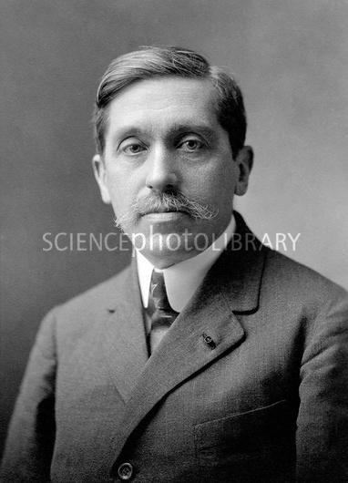
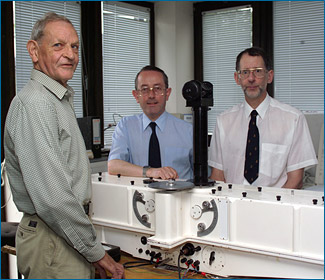
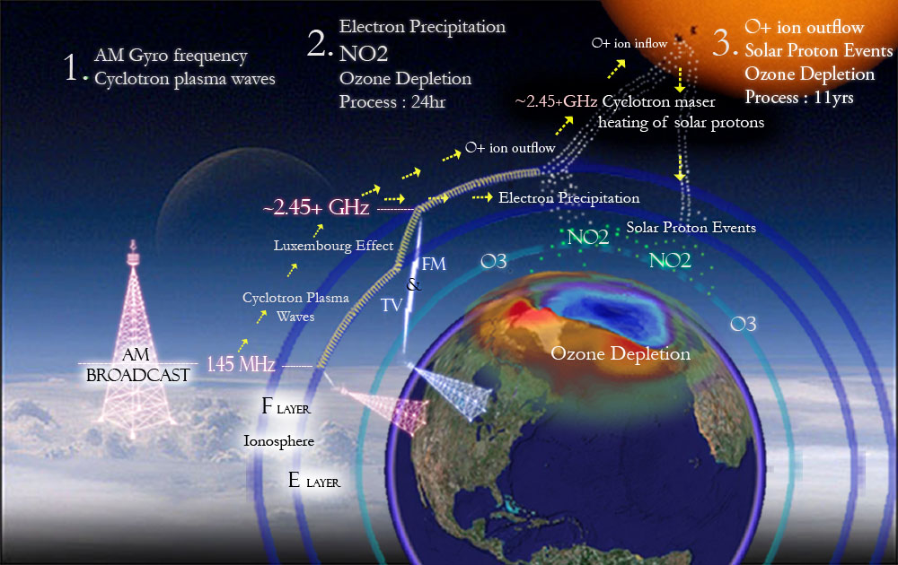
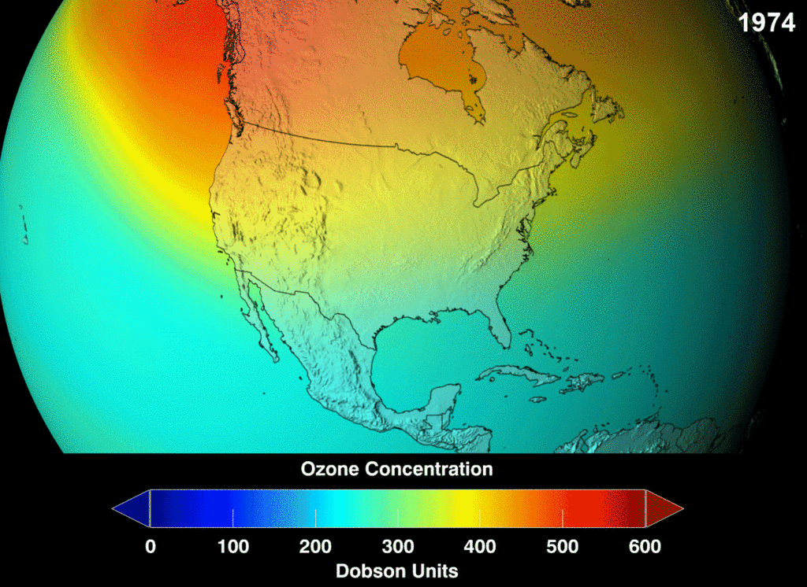
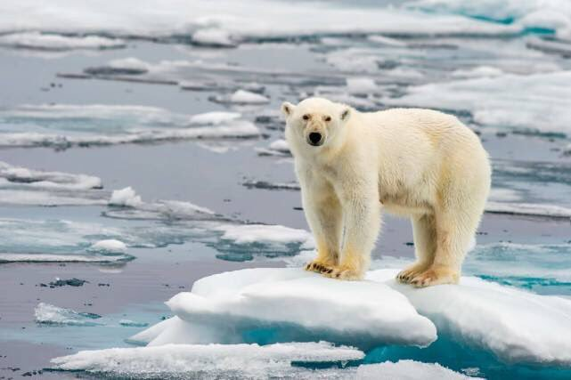
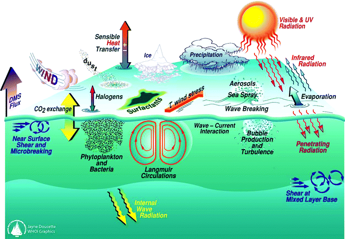

What is Ozone Layer?
Who discovered the ozone layer?
| In 1913,French physicists Henri Bussion(1873-1944) and Charles Fabry(167-1945) theorized that an ozone layer existed in the upper atmosphere. It was confirmed in a series if measurements of ultraviolet radiation levels that were recorded by W.N. Hartley and A.Cornu from 1879 to 1881. Its properties were explored in detail by the British meteorologist G.M.B.Dobson, who developed a simple spectrophotometer ( the Dobsonmeter)that could be used to measure stratospheric ozone from the ground. |  |
What is Ozone Hole?
The ozone hole is not technically a "hole " where no ozone is present,but is actually a region of depleted ozone in the stratosphere over the Antarctic that happens at the beginning of Southern Hemisphere spring(August-October). The average concentration of ozone in the atmosphere is about 300 Dobson Units; nay area where the concentation drops below 220 Dobson Units is considered part of the ozone layer.
The ozone hole over Antarctica grew relatively large in 2015,according to data acquired by the Ozone Monitoring Instrument (OMI) on NASA's Aura satelite. On October 2,2015,OMI observed that the hole had reached its largest single-day area for the year.The image above,based on data acquired with OMI,show the hole on that day. It spanned 28.2 million square kilometers(10.9 million square miles)-the fourth-largest area measured since the sart of the satellite record in 1979. The largest single-day ozone hole recorded by satellite was 29.9 million square kilometers (11.5 million square miles) on September 9,2000. While the ozone hole area was large in 2015,the size was consistent with what scientists know about ozone depletion and chemistry.
Who discovered the ozone layer?
| In 1984 British Antarctic Survey scientists,Joseph Farman,Brian Gardiner and Jonathan Shanklin, discovered a recurring springtime Antarctic ozone hole. Their paper was published in Nature,May 1985, the study summaried data that had been collected by the British Antarctic Survey showing that ozone levels had dropped to 10% below normal January levels for Antarctica. |  |
Ozone Depletion
Ozone layer depletion is one of the most serious problems faced by our planet earth. It is one of the prime reasons which are leading to global warming. From the 1970s the depletion of the ozone layer started to capture the attention of the scientists, environmentalists, and the world community at large. The decrease in ozone concentration in the middle layers of the atmosphere mainly in the stratosphere- is extremely damaging to life on earth. The first warning voice came from a paper published in 1974 by scientists Sh.Rowland and M.Molina of the University of California,who showed that chlorofluorocarbons (CFCs) used in refrigeration, and air conditioning and plastic foam manufacturing were responsible for the rapid destuction of ozone.
What causes Ozone depletion?
Predition
Which country is most affected by Ozone layer depletion?
The ozone hole usually only affects Antarctica directly, and it is not considered to be a country.However,it has appeared over areas like
- New Zealand
- Australia
- The southern tip of South America(which includes Argentina and Chile)
The Effects of Ozone Depletion
UVB radiations affects the physiological and developmental processof plants. It can alter its shape and damage plant growth;reduce tree growth;change flowering times;make plants more vulnerable to disease and produce toxic substances. |
 For some species, an increase in UV-B radiation implies the formation of skin cancer. This has been studied in goats, cows,cats, dogs,sheep and laboratory animals and is probably pointing out thant this is an common feature of several species. |
|
Skin Cancer: exposure to UV rays from sun can lead to increased risk for developing if several types of skin cancers. Malignant melanoma,basal and squamous cell carcinoma are the most common cancers cused by exposure to UV rays. Eye Damage: UV rays are harmful for our eyes too.Direct exposure to UV rays can lead to Cataract problems ans also Photokeratitis or snow blindness. In humans,exposure to UV rays can also lead to diffifulty in breathing,chest pain and throat irritation ans can even lead to hampering of lung function. |
 Ozone layer depletion leads to decrese in ozone in the stratosphere and increase in ozone present in the atmosphere. Presence of ozone in the lower atmosphere is considered as a pollutant and a greenhouse gas.Ozone in the lower atmosphere contributes to global warming and climate change. The depletion of ozone layer has trickle down effects in the form of global warming,which in turn leads to melting of polar ice,which will lead to rising sea levels and climate chages anrond the world. It can cause the acid rain. |